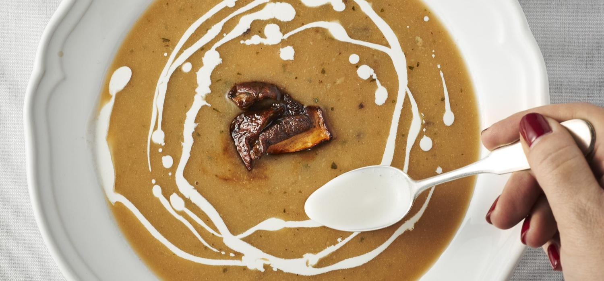
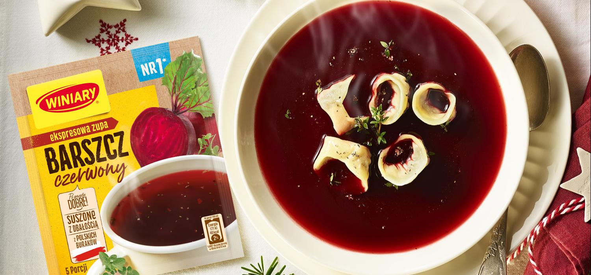
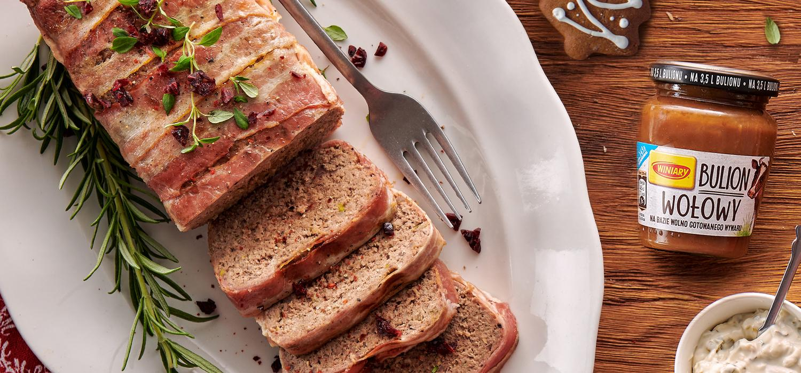
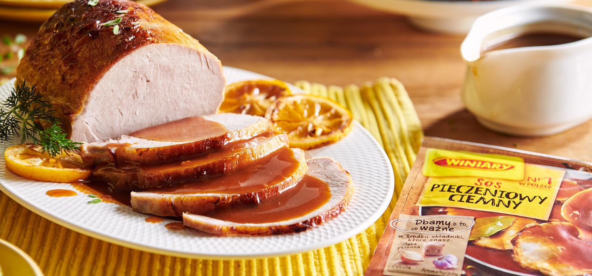

Przepisy na świąteczne smakołyki

1. Świąteczna zupa grzybowa
Składniki:
- 400 g pieczarek
- 2 łyżki masła
- 4 łyżki śmietany 30%
- trochę cukru
- 2 opakowania Zupy borowikowa Szlachetne Smaki WINIARY
Sposób przygotowania:
Zawartość opakowań Zupy borowikowej Szlachetne Smaki WINIARY rozprowadź 1 litrze zimnej wody.Postaw na ogniu i mieszaj do chwili zagotowania.Piec w piekarniku przez 15 minut w temperaturze 180 stopni C.Grzyby podsmaż na maśle, dopraw solą i pieprzem, a następnie dodaj do zupy.Zupę podawaj z dodatkiem śmietany i udekorowaną natką pietruszki.

2. Barszcz czerwony z uszkami z farszem grzybowym
Składniki:
- 1 opakowanie Barszczu czerwonego Ekspresowa Zupa WINIARY
- 1.5 łyżki Oleju słonecznikowego
- 1 jajko
- 150g Suszonych grzybów (najlepiej prawdziwki)
- 2 łyżki Masła klarowanego
Sposób przygotowania:
Z mąki, jajka, oleju i wody zagnieć w misce ciasto - powinno być elastyczne i dość sprężyste. Jeśli jest za twarde – dolej wody, jeśli za rzadkie – podsyp mąką.Grzyby ugotuj w małej ilości wody, aż będą miękkie. Ostudź, odcedź i bardzo drobno posiekaj.Drobniutko posiekaj cebule i tymianek.Na patelni rozpuść masło, dodaj cebulę, tymianek i przesmażaj, aż cebula się zeszkli.Następnie dodaj posiekane grzyby, dopraw solą i pieprzem i przesmaż razem mieszając około 5 minut.Gdy tak przygotowany farsz ostygnie, dodaj do niego bułkę tartą i wymieszaj.Ciasto rozwałkuj i wykrawaj kieliszkiem małe placuszki.Nakładaj na nie farsz i lep uszka.Gotowe uszka ugotuj w osolonym wrzątku i wyjmuj łyżką cedzakową, kiedy wypłyną.Podawaj barszcz z uszkami.
3.Sałatka warstwowa gyros
Składniki:
- 2 fileta z kurczaka
- 1cebula czerwona
- 1 sogórek
- 1 puszka kukurydzy
- 0.5 kapusty piekińskiej
- 4 łyżki Majonezu Dekoracyjnego
- 2 ząbki czosnku
Sposób przygotowania:
Mięso pokrój w kostkę i wymieszaj z Przyprawą drobiową Ziarenka Smaku WINIARY, posiekanym czosnkiem i 2 łyżkami oleju.Zamarynowane kawałki kurczaka usmaż na złoto i pozostaw do ostygnięcia - częściowo przykryte, aby za bardzo nie wyschło.
Ogórki i paprykę pokrój w kostkę.Cebulę i kapustę pokrój w drobne w cienkie paski. Kukurydzę odcedź z zalewy.Składniki układaj warstwami w podanej kolejności. Najpierw kurczak, cebula i cienka warstwa ketchupu. Następnie ogórki, kukurydza i warstwa majonezu. Dalej papryka i kapusta pekińska. Całość posyp świeżym, posiekanym szczypiorkiem.

4. Pasztet świąteczny
Składniki:
- 1 łyżka Bulionu wołowego
- 1 słoik Sosu tatarskiego
- 600g udziec z indyka bez skóry
- 200g Wątróbki drobiowej
- 200g Boczek świeży
- 2 jajka
- 1 szczypta imbiru
- troche soli i pieprzu
- trochę gai musztardowej
Sposób przygotowania:
Udziec, wątróbki i boczek w całości zmiel dwukrotnie w maszynce do mięsa.Do masy mięsnej wbij jajka.Dodaj Bulion wołowy WINIARY i pozostałe przyprawy.Formę do pasztetów wyłóż plasterkami boczku, włóż masę mięsną, wyrównaj i przykryj plasterkami boczku.
Piecz w temperaturze 170°C przez 60-70 minut.Pasztet pozostaw w formie do ostudzenia, a następnie wstaw do lodówki.Podawaj z Sosem tatarskim

5. Schab pieczony
Składniki:
- 1 łyżka miódu
- 1 ząbek czosnku
- 1 szczypta cynamonu
- 0.5 cytryny
- 0.75 opakowania Sosu pieczeniowy ciemny
- 350g Schabu wieprzowy bez kości
- 1 łyżka Przyprawy do zup, sosów, sałatek
Sposób przygotowania:
Przyprawę WINIARY, miód, roztarty ząbek czosnku i cynamon utrzyj z 3 łyżkami wody.Posmaruj mięso tak przygotowaną marynatą i obłóż plasterkami cytryny. Odstaw do lodówki na 12 godzin.
Zamarynowany schab przełóż do naczynia żaroodpornego i piecz pod przykryciem 35-45 minut w temperaturze do 200°C.Zdejmij przykrycie i piecz schab jeszcze przez 15 minut.Podawaj z Sosem pieczeniowym ciemnym WINIARY przygotowanym według przepisu na opakowaniu.